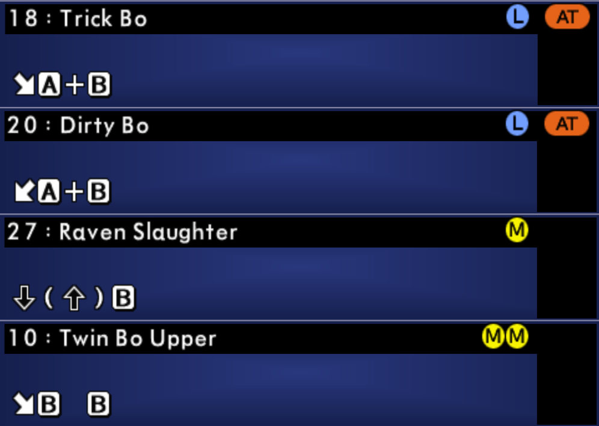

O movimento RAVEN SLAUGHTER ou TWIN BO UPPER ganha tempo o suficiente no Ar
para executar em seguida TRICK BO ou DIRTY BO, perto do RING OUT o resultado
é um Glitch para cada.
Funciona em apenas alguns cenários (Xiwei Siege Ruins, Kaminoi Castle,
Palgaea Shrine, Ostrheinsburg Chapel,...) e contra alguns personagens (Mitsurugi,
Necrid, Maxi, Astaroth,...).

SOULCALIBUR 3
(...)
SOULCALIBUR 4
Darth Vader
Yoda
(...)
SOULCALIBUR 5
Dampierre
(...)
SOULCALIBUR 6
SE01:
Tira
Amy Sorel
Cassandra Alexandra
YoRHa No. 2 Type B
SE02:
Hildegard von Krone
Setsuka
Hwang Seong-gyeong
Haohmaru